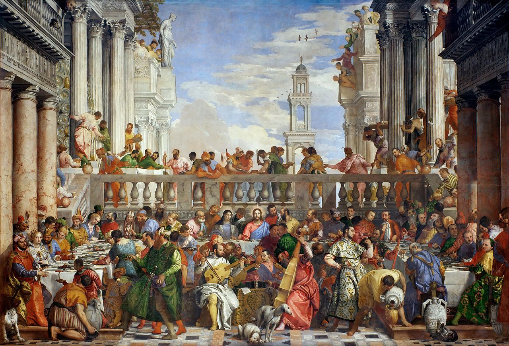
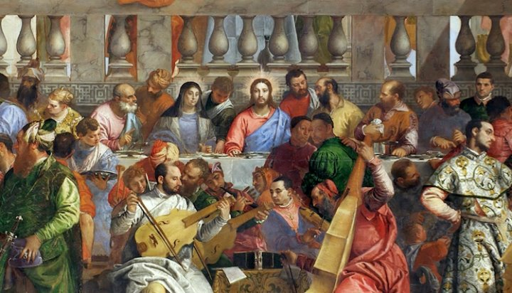
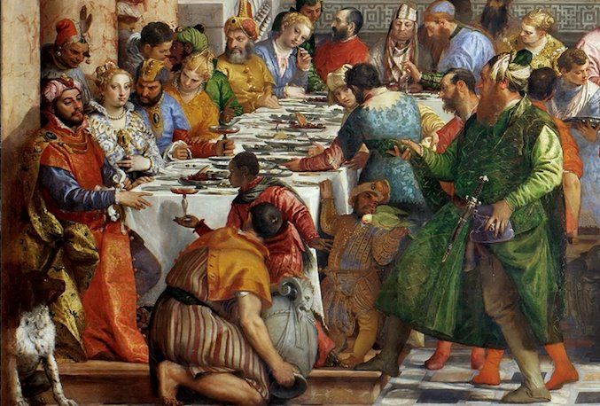

Este cuadro fue encargado el 6 de junio de 1562 para el refectorio del convento benedictino de San Giorgio, Veronese pintó la obra a lo largo de quince meses. La pintura representa un conocido pasaje del Evangelio de San Juan; Jesucristo, la Virgen María y algunos discípulos se encuentran en la celebración de una boda en Caná, en la región de Galilea cuando se termina el vino. Jesús ordena llenar unas vasijas de agua y las transforma en vino. En la obra el tema religioso aparece tratado como si de una festividad renacentista se tratara, el Veronese representa una típica fiesta veneciana; de hecho, la obra a la vez que gustó también fue duramente criticada por este hecho. Además en la obra se entremezclan elementos de la pasión cristiana junto con objetos realistas del siglo XVI. La arquitectura es completamente renacentista, en ella destacan las columnas de tipo jónico y corintio y el patio abierto en torno al cual se desarrolla la celebración. En el centro de la composición aparece la figura de Jesucristo y junto a él está María, rodeando a ambos, y en una disposición que remite a los discípulos de la última cena de Leonardo da Vinci, se encuentran algunos de los discípulos que acudieron a la ceremonia.
Relevancia social
La obra está diferenciada en dos partes distintas: en la parte superior los personajes se colocan en potentes escorzos y destaca la arquitectura mientras que en la zona inferior se agolpa una gran multitud de personajes. Los personajes son variopintos, aparecen representadas personas de distintas razas y en posiciones muy variadas. El artista se permite realizar un estudio detallado de cada uno de los personajes representandolos con gran realismo y minuciosidad.